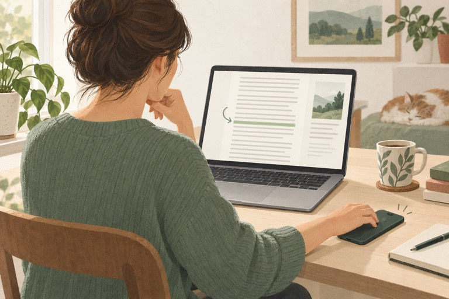

Situation 01
When a long article becomes a search for your place
You remember the idea, but not the line. A small interruption turns into another scan of the paragraph.
Read: Keep losing your place while reading online?Halfway through a paragraph, your eyes land on a line you have already read. LineCheck keeps the current line clear while the page around it dims. Move with the keyboard and mark the passages you want to return to.
A reading ruler for Chrome · Free and open source · Records stay local
The previous sentence can wait behind you.
Stay with this line until you are ready to move.
↑ ↓ to move, Enter to mark reviewed text, F to flag it.
Sometimes you want to finish a long article. Sometimes you need to untangle a sentence, or feel sure you checked a draft carefully. Start with the moment you recognise.

Situation 01
You remember the idea, but not the line. A small interruption turns into another scan of the paragraph.
Read: Keep losing your place while reading online?Situation 02
You look up one unfamiliar word. By the time you return, you have forgotten how the sentence started.
Read: Reading an English article, but restarting every sentence?Situation 03
You have read the page so many times that it all looks familiar. Familiar is not the same as checked.
Read: Before you publish, which lines have you actually checked?Open your article, start Focus from the extension, and follow the text with the arrow keys. Press Esc whenever you want the whole paragraph back. Notice whether finding your place takes a little less effort.
Questions or feedback? wangsk15@outlook.com